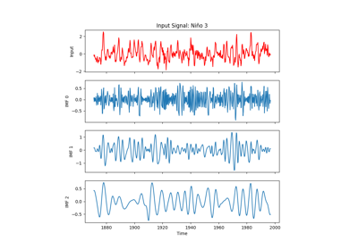

Gallery¶
Photo by Craig Lovelidge on Unsplash¶
Here’s a list of examples on how to use easyclimate. We will be adding more examples soon. Contributions are highly welcomed and appreciated. So, if you are interested in contributing, please consult the Contributing to easyclimate guide .
Warning
The examples provided are intended solely to demonstrate practical applications of the software and its functionalities. They serve as illustrative cases to help users understand how the tools can be employed in various scenarios. However, these examples do NOT necessarily reflect the most appropriate or scientifically validated methods for any specific type of study or analysis.
Users should exercise their own judgment when interpreting the results generated by the software, as the accuracy, reliability, and suitability of the output depend on multiple factors, including input parameters, data quality, and contextual relevance. The developers and contributors of this software assume NO responsibility for any errors, misinterpretations, or unintended consequences arising from the use of these examples or the application of the software in real-world situations.
For critical research or decision-making purposes, it is strongly recommended to consult domain-specific guidelines, validate methodologies with experts, and conduct thorough verification of results before drawing conclusions.
Notebook Examples¶


Bases for Atmospheric Science¶


Transient Eddy¶

Filter and Smooth¶


Empirical Mode Decomposition (EMD) and Ensemble Empirical Mode Decomposition (EEMD)


Empirical Orthogonal Function (EOF) and Maximum Covariance Analysis (MCA)
ICON and Triangular Mesh Visualization¶
Examples for plotting ICON triangular meshes and ICON variables stored on cell centers. The gallery covers mesh edges, native triangular cell fills, cell-centered filled and line contours, and ICON wind-vector displays.
Interpolation and Regridding¶
MPAS and Voronoi Mesh Visualization¶
Examples for plotting MPAS unstructured meshes and MPAS variables stored on cell centers or vertices.
Ocean¶


Oscillation¶

{kind=link}

Arctic Dipole Anomaly (DA/AD) and Barents-Beaufort Oscillation (BBO)